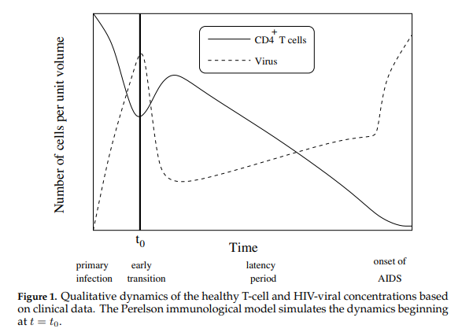
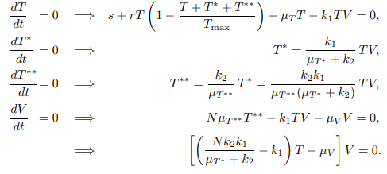
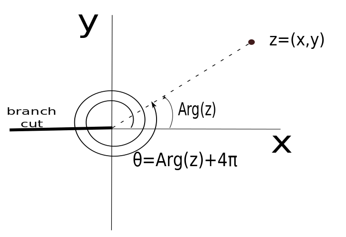
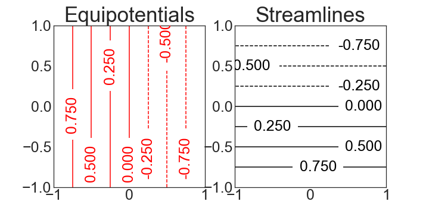
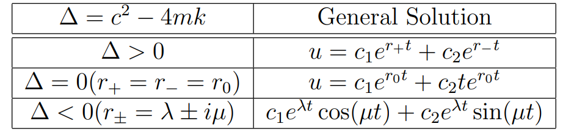

import numpy as np
import matplotlib.pyplot as plt
from scipy.integrate import odeint
from mpl_toolkits import mplot3d
12.8. JNB Lab: HIV-AIDS#
12.8.1. 1 Introduction#
The war against HIV/AIDS has been fought for many years on a variety of fronts. Clinical research has shown that early administration of anti-retroviral therapy (ART) can reduce transmission of HIV from one infected partner to another (Cohen et al 2011). Similarly, such therapy can help prevent the transmission of HIV from mother to newborn. Countries such as the African country of Lesotho have experienced having 1/4 of their population HIV-positive. In such situations, there is an urgent need to get the word out to at-risk people to go for HIV testing. Vodafone foundation initiated a mobile outreach program in September 2015, using the mobile platform to register HIV patients and track treatment, as well as send out SMS messages providing information about HIV AIDS, all messages ending with the words “Get tested for HIV”. Timely testing can make all the difference.
Mosotho’s mother discovered that she was HIV+ early in her pregnancy, and immediately began to take drugs to prevent her from infecting her baby. When Mosotho was born, he was immediately put on the life saving treatment. M’e N’thabang, a mother of eight children, three of whom were HIV+, for months would bring her young grandson, Mosotho, for his pediatric check-up. Today, he is HIV-, a testament to the impact of what proper health care can do for people. (allafrica.com, 2016)
12.8.2. 2 UNAIDS Fact Sheet#
Here is the data from a recent UNAIDS fact sheet highlighting how grave the HIV situation is. (https://www.unaids.org/en/resources/fact-sheet)
Global HIV statistics
39.0 million [33.1 million–45.7 million] people globally were living with HIV in 2022.
1.3 million [1 million–1.7 million] people became newly infected with HIV in 2022.
630 000 [480 000–880 000] people died from AIDS-related illnesses in 2022.
29.8 million people were accessing antiretroviral therapy in 2022.
85.6 million [64.8 million–113.0 million] people have become infected with HIV since the start of the epidemic.
40.4 million [32.9 million–51.3 million] people have died from AIDS-related illnesses since the start of the epidemic.
Infected Population
In 2022, there were 39.0 million [33.1 million–45.7 million] people living with HIV.
37.5 million [31.8 million–43.6 million] adults (15 years or older).
1.5 million [1.2 million–2.1 million] children (0–14 years).
53% of all people living with HIV were women and girls.
86% [73– 98%] of all people living with HIV knew their HIV status in 2022.
About 5.5 million people did not know that they were living with HIV in 2022.
People living with HIV accessing antiretroviral therapy
At the end of December 2022, 29.8 million people were accessing antiretroviral therapy, up from 7.7 million in 2010.
In 2022, 76% [65–89%] of all people living with HIV were accessing treatment.
77% [65–90%] of adults aged 15 years and older living with HIV had access to treatment, as did 57% [44–78%] of children aged 0–14 years.
82% [69–95%] of women aged 15 years and older had access to treatment; however, just 72% [60–84%] of men aged 15 years and older had access.
82% [64–98%] of pregnant women living with HIV had access to antiretroviral medicines to prevent transmission of HIV to their child in 2022.
New HIV infections
New HIV infections have been reduced by 59% since the peak in 1995.
In 2022, 1.3 million [1 million–1.7 million] people were newly infected with HIV, compared to 3.2 million [2.5 million–4.3 million] people in 1995.
Women and girls accounted for 46% of all new infections in 2022.
Since 2010, new HIV infections have declined by 38%, from 2.1 million [1.6 million–2.8 million] to 1.3 million [1 million–1.7 million] in 2022.
Since 2010, new HIV infections among children have declined by 58%, from 310 000 [210 000–490 000] in 2010 to 130 000 [90 000–210 000] in 2022.
AIDS-related deaths
AIDS-related deaths have been reduced by 69% since the peak in 2004 and by 51% since 2010.
In 2022, around 630 000 [480 000–880 000] people died from AIDS-related illnesses worldwide, compared to 2.0 million [1.5 million–2.8 million] people in 2004 and 1.3 million [970 000–1.8 million] people in 2010.
AIDS-related mortality has declined by 55% among women and girls and by 47% among men and boys since 2010.
Key populations
Globally, median HIV prevalence among the adult population (ages 15-49) was 0.7%. However, median prevalence was higher among key populations:
2.5% among sex workers
7.7% among gay men and other men who have sex with men
5.0% among people who inject drugs
10.3% among transgender persons
1.4% among people in prisons.
Women and Girls
Globally 46% of all new HIV infections were among women and girls (all ages) in 2022.
In sub-Saharan Africa, women and girls (all ages) accounted for 63% of all new HIV infections. In all other geographical regions, over 70% of new HIV infections in 2022 occurred among men and boys.
Every week, 4000 adolescent girls and young women aged 15–24 years became infected with HIV globally in 2022. 3100 of these infections occurred in sub-Saharan Africa.
Testing and Treatment Targets (95–95–95)
In 2022, 86% [73– >98%] of all people living with HIV knew their HIV status.
Among people who knew their status, 89% [75– >98%] were accessing treatment.
And among people accessing treatment, 93% [79– >98%] were virally suppressed.
Among children ages 0-14 years the 95-95-95 targets were 63% [49% - 86%], 91% [71% - >98%], 81% [63%->98%]
Among women, the 95-95-95 targets were: 90% [76->98%], 91% [77->98%], and 93% [79->98%].
Among men, the 95-95-95 targets were: 83% [70-98%] of adult men living with HIV knew their HIV status, 86% [72->98%] were accessing treatment and 94% [79->98%] were virally suppressed.
Among all people living with HIV, 86% [73– >98%] knew their status, 76% [65–89%] were accessing treatment and 71% [60–83%] were virally suppressed in 2022.
Investments
At the end of 2022, 20.8 billion (in constant 2019 United States dollars) was available for the AIDS response in low- and middle-income countries—around 60% was from domestic sources.
UNAIDS estimates that 29 billion (in constant 2019 United States dollars) will be required for the AIDS response in low- and middle-income countries, including countries formerly considered to be upper-income countries, in 2025 to get on track to end AIDS as a public health threat.
12.8.3. 3 Perelson’s Immunological HIV Model#
Almost 50 years have passed since the first immunological model of HIV was proposed by Leon Cooper [1986]. Differential equation models and discrete difference equations have been used by both immunologists and epidemiologists in the war against HIV/AIDS. Whereas immunological models describe how the HIV virus attacks the body’s immune system, epidemiological models describe the spread of the HIV/AIDS throughout a population. With the understanding that all mathematical models depend on simplifying assumptions which need to be revised as further experimental evidence/data is obtained (Covert and Kischner 2000), Perelson’s model, as introduced briefly in this lab, will help us understand why ART helps the human immune system fight HIV (see Isihara et. al 2005 for a more complete introduction).
Our immune system has two lines of defense: innate (i.e., general defense against all invaders) and acquired (i.e., defense targeted at specific invaders). Our front-line defense keeps invaders from entering the body or bloodstream, and secondary defense fights invaders that have passed through the front-line. Whereas the innate immune system (eg. skin, stomach acid, mucus, phagocytes) works in both lines of defense, the acquired immune system only works in the second-line via lymphocytes which target antigens, (i.e. large molecules on the surfaces of cells, viruses, bacteria etc.) which uniquely identify invaders. T-cells are a type of lymphocyte produced in the marrow. CD4\(^{+}\) T-cells normally average about 1000 per cubic mm of blood and a decrease in their concentration level is used to assess HIV positive status. Perelson’s model describes the change in concentration of healthy CD4\(^{+}\) T-cells after an individual becomes infected with the HIV virus. After the primary infection, an HIV positive individual may go through a latency period which may vary considerably before the onset of AIDS. During this period, while free HIV viral cells attach themselves to healthy T-cells resulting in latently affected T-cells, the healthy T-cell concentration remains sufficiently high so that the immune system remains functional. AIDS occurs when the T-cell concentration drops and the HIV viral concentration rises sufficiently, thereby crippling the acquired immune system. AIDS patients are then at critical risk to succumb to other diseases such as pneumonia.
Perelson’s Immunological Model is a non-linear system of four ordinary differential equations. Perelson’s model considers the qualitative dynamics of the healthy T-cell and HIV-viral concentrations shown in Figure 1 below.
{kind=link}
In this model, \(T(t)\), \(T^*(t)\), \(T^{**}(t)\) and \(V(t)\) represent respectively the concentrations of healthy T-cells, latently infected T-cells, actively infected T-cells, and HIV viral cells. The four equations specify the dynamics shown in Figure 2.

Change in Healthy T-Cells Equation (12.4)
This equation gives the rate of change \(\dfrac{dT}{dt}\) in the concentration \(T(t)\) of healthy T-cells New, healthy T-cells enter into the blood stream at a constant rate s (this is an oversimplification, since the rate is expected to decrease during the course of the HIV infection. See Kirschner and Webb 1996). In the absence of free virus (V = 0), the entire right-hand side of the equation reduces to a modified logistic growth equation. The \(−k_1T V\) term assumes that the rate of infection of T-cells by free viral cells is jointly proportional to the concentration of T-cells and the concentration of free virus.
Change in Infected T-Cells Equation (12.5)
This equation gives the rate of change \(\dfrac{dT^∗}{dt}\) in the concentration \(T^∗(t)\) of latently infected T-cells. Growth is due to the infection of healthy T-cells with free viral cells (\(k_1T V\) ). Decreases are due to death (\(−\mu_{T^∗} T)\) (the death rates may be different for healthy, latently infected, and actively infected T-cells), and by progression from latent to active infection (\(−k_2T^∗\)).
Change in Actively Infected T-Cells Equation (12.6)
This equation gives the rate of change \(\dfrac{dT^{∗∗}}{dt}\) in the concentration \(T^{∗∗}(t)\) of actively infected T-cells. Growth is due to latently infected cells becoming actively infected (\(k_2T^∗\)). Decrease in concentration is due only to death (\(µ_{T^{∗∗}}T^{∗∗}\)).
Change in Virus Concentration Equation (12.7)
This equation gives the rate of change \(\dfrac{dV}{dt}\) in the concentration \(V (t)\) of the free virus. Growth occurs when an actively infected T-cell lyses (i.e., explodes). It is assumed that \(N\) copies of the free viral cell are created upon lysing (\(Nµ_{T^{∗∗}} T^{∗∗}\)). The free viral concentration decreases as the free virus becomes attached to healthy T-cells (\(−k_1T V\)) and also through death (\(−µ_V V\)).
In particular, Equation HIV1 tells us latently infected T-cells are created when free HIV viral cells attach to healthy T-cells with rate constant \(k_1\). Also, Equation HIV4, giving the rate of change \(\dfrac{dV}{dt}\) in the concentration \(V(t)\) of the HIV virus indicates that when an actively infected T-cell lyses (i.e. explodes), it releases \(N\) copies of the HIV viral cell (\(N\mu_bT^{**}\)). The free viral concentration decreases as the free virus becomes attached to healthy T-cells (\(-k_{1}TV\)) and also through death (\(-\mu_VV\)).
12.8.4. 4 Equilibrium Analysis#
A key to understanding how Perelson’s model simulates the lowering of the healthy T-cell concentration is based on an equilibrium analysis. Full details of this equilibrium analysis can be found here:
The equilibrium points for the system are obtained by solving the following system of algebraic equations:
{kind=link}
Using the parameter values shown in Table 1 below, the system has two different equilibrium points for the healthy T cell concentration. Figure 3 shows that for lower values of the lysing parameter \(N\), the equilibrium value corresponding to a healthy person’s T-cell concentration is stable.
{kind=link}
Figure 4 shows at higher values of \(N\) a loss of stability of the equilibrium representing healthy T-cell concentrations and gain of stability of the other equilibrium representing a low T-cell count characteristic of the onset of AIDS.

Figure 5 shows the long term stability of T-cells as \(N\) grows larger and larger, displaying
{kind=link}
One type of anti-retrovial drug called a nucleotide reverse transcriptase inhibitor (NRTI), for example AZT, reduces the lysing number \(N\) by preventing the virus from reproducing inside infected T-cells.
12.8.5. 5 Analysis in Python#
The script below can be used to solve the Perelson model numerically using the initial and constant values given in Table 1.
{kind=link}
What is important to observe is the long-range or steady-state T-cell and free viral concentrations. A drop significantly below the (healthy) steady state value of 1000 cell/ml indicates the onset of AIDS.
def f(y, t, params):
T, T1,T2, V = y # unpack current values of y
s,r,Tmax,muT,mub,muV,k1,k2,N= params # unpack parameters
derivs = [s+r*T*(1-(T+T1+T2)/Tmax)-muT*T-k1*T*V, # list of dy/dt=f functions
k1*T*V-muT*T1-k2*T1,
k2*T1-mub*T2,
N*mub*T2-k1*T*V-muV*V]
return derivs
# Parameters
s=10
r=.03
Tmax=1500
muT=.02
mub=.24
muV=2.4
k1 = 2.4*10**(-5)
k2=3*10**(-3)
N=1800
# Initial values
T0=1000
T10=0
T20=0
V0=10**(-3)
# Bundle parameters for ODE solver
params = [s,r,Tmax,muT,mub,muV,k1,k2,N]
# Bundle initial conditions for ODE solver
y0 = [T0,T10,T20,V0]
# Make time array for solution
tStop = 1501
tInc = 0.05
t = np.arange(0., tStop, tInc)
# Call the ODE solver
psoln = odeint(f, y0, t, args=(params,))
# Plot results
fig = plt.figure(1, figsize=(5,3))
plt.plot(t, psoln[:,0],label='Healthy T-Cell')
plt.plot(t, psoln[:,3],label='Free Virus')
plt.legend()
plt.xlabel('time')
plt.ylabel('Concentration')
plt.savefig("HIV1.png")
plt.tight_layout()
plt.show()
{kind=link}
print("Steady State Healthy T-cell Concentration=",psoln[30000,0])
print("Steady State Free Viral Concentration=",psoln[30000,3])
Steady State Healthy T-cell Concentration= 427.7491644977716
Steady State Free Viral Concentration= 751.3443859716944
12.8.6. 6 Sensitivity Analysis#
The onset of HIV is marked by rapid decrease in healthy T-cell concentration which impairs the immune system. Let us see how the long-range (i.e. steady-state) healthy T-cell concentration depands on the size of the lysing parameter \(N\).
def f(y, t, params):
T, T1,T2, V = y # unpack current values of y
s,r,Tmax,muT,mub,muV,k1,k2,N= params # unpack parameters
derivs = [s+r*T*(1-(T+T1+T2)/Tmax)-muT*T-k1*T*V, # list of dy/dt=f functions
k1*T*V-muT*T1-k2*T1,
k2*T1-mub*T2,
N*mub*T2-k1*T*V-muV*V]
return derivs
# Parameters
s=10
r=.03
Tmax=1500
muT=.02
mub=.24
muV=2.4
k1 = 2.4*10**(-5)
k2=3*10**(-3)
# Initial values
T0=1000
T10=0
T20=0
V0=10**(-3)
# Bundle initial conditions for ODE solver
y0 = [T0,T10,T20,V0]
# Make time array for solution
tStop = 1501.
tInc = 0.05
t = np.arange(0., tStop, tInc)
# N values
Nval=np.arange(0,2001,1)
Tval=np.arange(0,2001,1)
Vval=np.arange(0,2001,1)
for N in Nval:
# Bundle parameters for ODE solver
params = [s,r,Tmax,muT,mub,muV,k1,k2,N]
# Call the ODE solver
psoln = odeint(f, y0, t, args=(params,))
Tval[N]=psoln[30000,0]
Vval[N]=psoln[30000,3]
fig = plt.figure(1, figsize=(5,3))
plt.plot(Nval, Tval,label='Healthy T cell Concentration')
plt.plot(Nval, Vval,label='Free Viral Concentration')
plt.legend()
plt.xlabel('N')
plt.ylabel('Concentration')
plt.savefig("Nsa.png")
plt.tight_layout()
plt.show()
{kind=link}
Note that around \(N=1200\), there is a rapid drop off in the healthy T-cell concentration. Our model predicts that an anti-retroviral drug therapy which reduces the value of \(N\) to less than 1000 would help prevent the onset of AIDS.
12.8.7. 7 Exercises#
Exercises
A second type of anti-retroviral drug reduces the value of \(k_1\) by attaching themselves to free HIV viral cells so they are not able to infect healthy T-cells.
a) Using the values in Table 1 except \(k_1=10^{-6}\) and \(N=500\), plot the healthy \(T\) cell and free viral concentration \(V\) as a function of time \(t\) over the time interval \(0\le t\le 1500\).
b) Repeat using \(k_1=10^{-4}\) and \(N=500\). What do you observe?
Using the parameter values in Table 1 with \(N=500\), do a sensitivity analysis showing how the steady state healthy T-cell and free-viral concentrations depend on \(k_1\).
Explore combinations of anti-retroviral therapies.
a) First define a function \(z\)=treatment\((i,j)\) which assigns the values \(N=100+i\) and \(k_1=10^{-5}j\) and computes the corresponding steady-state healthy T-cell concentration.
b) Let \(Z(i,j)\)=treatment\((i,j)\) over the range \(1\le i \le 100\) and \(1\le j\le 20\). Give the value of \(Z(10,5)\) and interpret it’s meaning.
c) Make a 3D plot of your output. Label the axes appropriately.
What caution is needed in interpreting our model results?
What parts of the world have the most serious HIV/AIDS problem today?
A pandemic must be fought at all times by as many people as possible. What role might you play in fighting HIV/AIDS?
12.8.8. Bibliography#
Africa: Using Mobile to Fight HIV/Aids in Lesotho and Kenya - Breaking the Cycle of Infection With Data, M-Money and SMS.(May 1, 2016) http://allafrica.com/stories/201605301340.html
Cohen, Myron S. et. al., 2011. Prevention of HIV-1 Infection with Early Anti-retroviral Therapy. The new England Journal of Medicine, 365(6), 493-505.
Cooper, Leon N. 1986. Theory of an immune system retrovirus. {Proceedings of the National Academy of Science.} 83: 9159-9163.
Covert, Douglas J. and Denise Kirschner. 2000. Revisiting Early Models of the Host-Pathogen Interactions in HIV Infection. {Comments Theoretical Biology.} 5(6): 383-411.
GBD 2015 HIV Collaborators. Estimates of global, regional, and national incidence, prevalence, and mortality of HIV, 1980-2015: the Global Burden of Disease Study 2015. http://www.thelancet.com/pdfs/journals/lanhiv/PIIS2352-3018(16)30087-X.pdf
Isihara, P. et. al., Immunological and Epidemiological HIV/AIDS Modeling. 2005. UMAP Journal 26.1, 49-90.
Perelson, Alan S., D.E. Kirschner and R. DeBoer. 1993. Dynamics of HIV Infection of CD4\(^{+}\) cells. {Mathematical Biosciences.} 114: 81-125.
UNAIDS, 2014, 90-90-90 An ambitious treatment target to help end the AIDS epidemic. http://www.unaids.org/sites/default/files/media\_asset/90-90-90\_en\_0.pdf